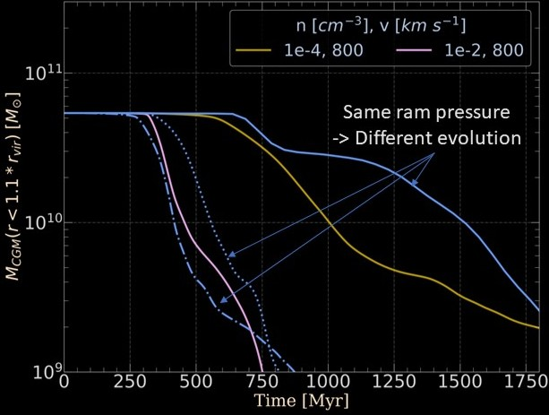

The Big Picture
Galaxies are a collection of stars, plasma and dark matter.
Late-type galaxies harbor a dense disk of cold atomic (104 K), molecular (10-100 K) as well as ionized (104.5-6 K) gas within the stellar disk,
referred to as the interstellar medium (ISM).
However, a significant fraction of the baryonic matter in a galaxy resides not in the disk but rather in a diffuse medium
extending out to the galaxy's virial radius - the circumgalactic medium (CGM).
The CGM funnels pristine (low-metallicity) gas from the intergalactic medium, fueling a new generation of star formation in the disk.
Stars ending their lives in supernovae pollute this CGM reservoir with metal-rich ejecta,
thereby forming a feedback loop of outflows and inflows.
Galaxies do not always evolve in isolation but can be a part of a group or cluster environment. Clusters of galaxies represnt the largest gravitationally bound systems,
comprising hundered to thousands of galaxies residing within a deep potential well.
The majority of baryons in the clusters are found in the intracluster medium (ICM), a pervasive medium occupying the intergalactic spaces within clusters.
The ICM is characterized by extremely high temperatures, typically on the order of ten millions of kelvins.
The infall of satellite galaxies into the cluster potential well subjects their gaseous components,
namely the interstellar and circumgalactic media, to an effective ram pressure force.
The ram pressure of the ICM on a galaxy, which is the product of the ambient ICM density and the square of the
relative velocity, can disrupt the galaxy's gaseous reservoir while leaving its stellar distribution undisturbed.
This strips off the dense as well as the diffuse gas from the galactic disk and the CGM, resulting in elongated tails
of stripped gas trailing behind the galaxy.
Galaxies undergoing ram pressure stripping display a variety of telltale visual features, for example in the GASP survey with MUSE,
whose remarkable morphologies (see the banner above) have earned them the illustrative name "jellyfish galaxies."
Hydrodynamic Simulations
Stripping the circumgalactic and interstellar media
Our 3D-hydrodynamic simulations of ram pressure stripping (Ghosh et al. 2024 arxiv:2404.02035) of a galaxy facing constant wind from the ICM in a wind-tunnel setup,
reveal important physical mechanisms that remove the gaseous reservoir. We simulate a rotating galactic disk, in which Lagragian
particles are initialized in the post-processing with ParaView. The interstellar disk in the above video is volume-rendered as
a wireframe and colored according to its number density (the right colorbar initially, and later on the top).
The Lagrangian particles are colored according to their local tracer field, with
red (1- bottom left colorbar) colored spheres marking pristine disk gas and blue (0) for completely mixed gas.
Surrounding the disk, is a stationary CGM which is pushed by the ICM wind beyond the virial radius. The wind direction is indicated by the arrow.
If we start volume-rendering the circumgalactic gas (in grayscale), and fast-forward to 300 Myr, we start to see the
ISM which has lost gas from the outskirts and reduced in size. A gradient in the color of the spheres marking the
Lagragian particles demonstrates the mixing of the stripped ISM gas down the tail, with both the CGM and ambient ICM gas.
A continous stripping phase progresses for the CGM and ISM, with a non-negligible fraction of CGM gas in the stripped tails till 800 Myr.
The contribution of the CGM in the stripped tails is quite evident in the evolution of the slice plots below
(zoomed 40 kpc ✕ 100 kpc regions around the disk). The rotational signature is carried over in the tails by the stripped ISM
gas.
Who wins? Gravity or Hydrodynamic interaction?
For the ISM, we find that the gravity plays a critical role. The gas from the ISM is stripped when the impinging ram pressure exceeds the gravitational restoring pressure from the stellar and dark matter potential of the galaxy. This is in accordance with the classic Gunn & Gott 1972 criterion . With increasing ram pressure strength from yellow to pink curves, the ISM mass progressively becomes lower. Blue curves in different linestyles have the same pressure from the ICM and show a similar evolution. We therefore find that the ISM is ram pressure stripped with gravitational restoring pressure determining its fate. The greater the impinging ram pressure, the higher is the ISM stripping!
 The story for the CGM is, however, a bit different!
The gravitational restoring force on the CGM is mostly negligible. The CGM mass evolution is quite different at the same ram pressure strength as seen in the widely separated blue lines in different linestyles. In some cases, the CGM can survive for long (about 2Gyr) while in the others 90% of it is lost within 500 Myr. In Ghosh et al. 2024 (arxiv:2404.02035), we analyze the wide parameter space for CGM stripping and find that gravity can not bind the circumgalactic reservoir. The CGM-ICM interaction is analogous to ‘cloud-wind interaction’. The stripping timescale depends not on the ram pressure but on the density contrast between the CGM and the ICM.
Our study brings out important regimes of CGM stripping in clusters, notably the relatively unexplored `bubble drag' problem. It is important to note that ram-pressure experinced by a galaxy in its orbit through the cluster potential well, would determine whether the jellyfish galaxy loses its CGM completely in a close pericentric passage or not. Fully describing the influence of environment of a galaxy is likely to be a complex combination of different effects, with ram pressure stripping playing a small yet important role!